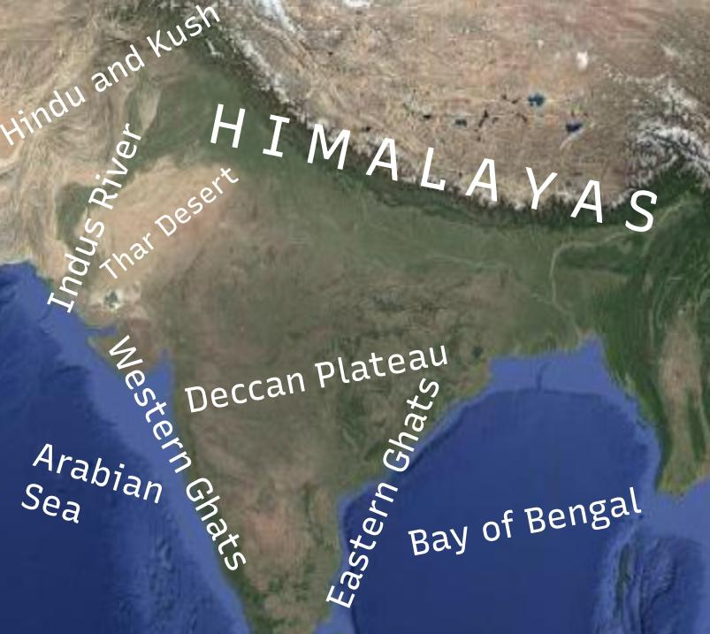
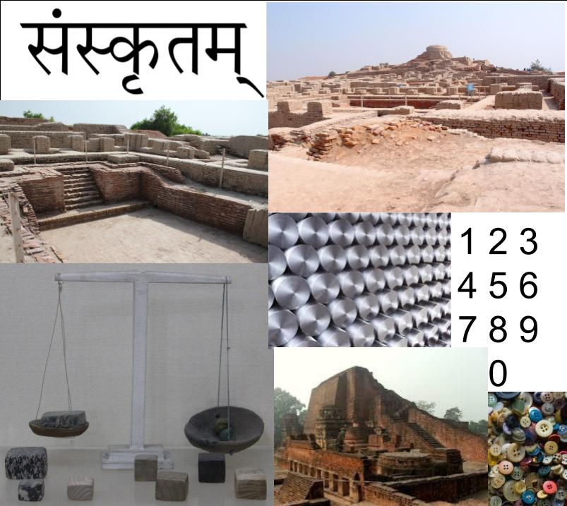
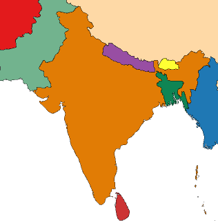
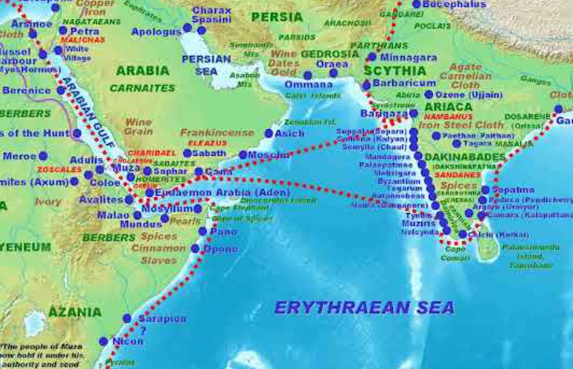
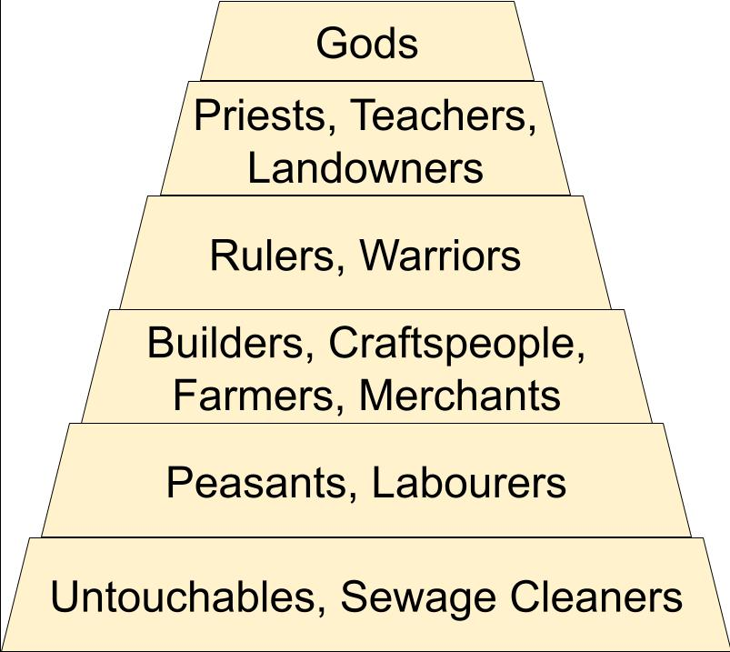

The Indus River Valley is in what is currently Pakistan and India, however there are also some sections that go into Nepal, Bhutan, and Bangladesh. To the south is the Deccan plateau, a large desert-like area surrounded by the Ghat mountains, covering the entire southern part of the coast of present-day India. To the east is the Himalayas, a large mountain range to the north, and the Thar Desert, a large desert, a bit southeast, much closer to the Indus River. To the north is more of the Himalayas, and the Hindu Kush mountains, separating India from the rest of Asia. To the west are more mountains, part of the Kush mountains, and beyond that, Persia. More in the south is the Arabian sea, and all the way to the southeast, the bay of Bengal. The kinds of crops they grew were mostly grains, such as rice and barley, as well as cotton.
The bull, buffalo, and tiger seemed to have religious significance, however we really have no idea of their religion, as we haven't found any religious temples or buildings. However, we do know that Indo-Aryans moved to India around 2000 BCE, and merged their culture with the Indus Valley culture to make an early form of Hinduism. Buddhism also emerged about 1400 - 1600 years later, from a man named Siddhartha Gautama.

India has many achievements, starting with their cities. First of all, they had sophisticated grid layouts, and standardized brick sizes. They also had plumbing and toilets. 5000 years ago. It's crazy that flush toilets and sewage systems have been around so long, because humans appreciate good smells. They also had a large bath called the great bath for bathing. They had the first standardized measurements, as well as tools to measure them, such as rulers and weights. A little while later, they invented things like steel, university, and the number zero. Another major achievement was the language Sanskrit. It was the first language with an alphabet, and has impacted over 97% of today's languages in some way, as well as being a very useful language. It's easy to learn, the writing is phonetic, there are no homophones, and there are a ton of very descriptive words for different things, to the point where there can be hundreds of words for the same thing, each with their own spelling, pronunciation, and meaning.

Back in the Indus River Valley Civilization, there was not really a ruler. We haven't found evidence of a form of government yet. Then, the Indo-Aryans came, and there were some small republics and kingdoms all over the place, then around 350 BCE, came the Mauryan Empire, founded by Chandragupta Maurya. Then the Mauryan Empire fell after about 200 years, and then came the Kushan Empire, then the Gupta Empire, and that was about it for Ancient India. The Gupta empire was actually founded by someone named Chandra Gupta I, which could cause a little bit of confusion between the different Chandraguptas.

Back in the old days, the Indus River Valley Civilization had a relatively large trading network, mostly trading with Egypt and Mesopotamia, but also other places. They stuck to more of a traditional barter system, not using a money system. Cotton was definitely the most important part of their trade, as other places couldn’t easily get the cotton without trade with the Indus. Minerals were also sourced from the north and west.

Basically, the Indus Valley had a very strict Caste system, where if you interacted with someone outside of your caste, you might get demoted. It basically went: Dalit (Untouchables, sewage cleaners), Shudra (Labourers and Peasants), Vaishya (Farmers and Merchants mostly), Kshatriya (Rulers and Warriors), Brahmana (Scholars, Judges, Teachers, and Landowners), and then Gods. The main jobs you might have in the Indus River Valley were Builders, Farmers, Merchants and Craftspeople.